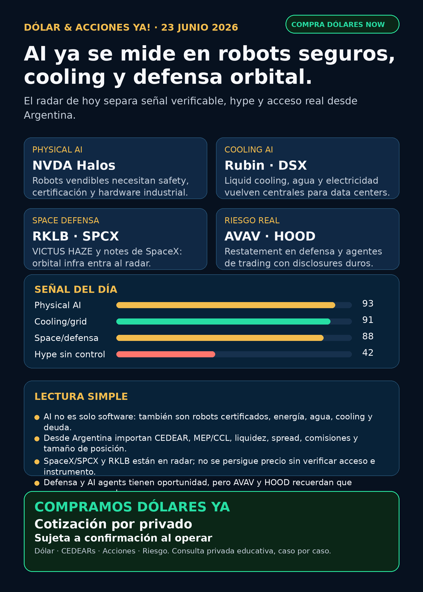

AI ya se mide en robots seguros, cooling y defensa orbital.
Reporte educativo para Argentina: fuentes verificadas, capa dólar/CEDEARs y cero recomendación personalizada.

Audio: suspendido por instrucción vigente de Charly. Esta edición es texto, imagen y fuentes.
Dólar & Acciones YA — Radar completo — 23/06
Lectura simple del día
La señal de hoy es bastante clara: la AI trade se volvió física. Ya no alcanza con mirar modelos o tickers de moda. El dinero grande está chocando contra robots que necesitan certificación, data centers que necesitan refrigeración y electricidad, satélites que se lanzan con ventanas militares, empresas que se financian con deuda larga y reguladores que aceleran o frenan medicamentos.
En criollo: una empresa puede ser excelente y aun así no ser buena entrada al precio actual. Y desde Argentina hay otra capa: CEDEAR o acción directa, MEP/CCL, spread, comisiones, liquidez, impuestos y tamaño dentro de cartera. Esto es research educativo para decisión humana, no orden de compra o venta.
Dólar Argentina — snapshot operativo
Fuentes públicas consultadas esta mañana: BlueLytics, CriptoYa y DolarAPI. Para operar, confirmar siempre broker/mesa en vivo, horario, spread y comisiones.
- BlueLytics 23/06 08:46 AR: oficial compra $1432 / venta $1482; blue compra $1463 / venta $1495.
- CriptoYa: MEP AL30 24h aprox. $1482,80 y CCL AL30 24h aprox. $1526,07, con timestamps de cierre/mercado previo; no tratarlo como precio intradiario de broker.
- CriptoYa cripto/USDT: ask aprox. $1531,02 / bid aprox. $1516,78.
- DolarAPI respondió 200 pero con actualización 22/06 para varias series; se usa como contraste, no como fuente intradiaria principal.
Tesis central
La AI se está moviendo hacia infraestructura concreta:
- Robots/physical AI: NVIDIA anunció Halos for Robotics, un stack de safety/certificación para robots. La lectura no es “robots virales”: es que la robótica vendible necesita seguridad, validación, hardware y partners industriales.
- Cooling/data centers: NVIDIA explicó que Rubin apunta a 100% liquid cooling y que DSX busca loop cerrado/zero-water en condiciones favorables. Ahí entran energía, agua, grid, cooling y utilities.
- Space/defensa: Rocket Lab ejecutó VICTUS HAZE para U.S. Space Force con notice-to-launch de 16h42m. RKLB no queda solo como launch especulativo: también diseño, fabricación, lanzamiento y operación orbital.
- SPCX/SpaceX: SEC 8-K informó primera oferta de senior unsecured notes y cash/cash equivalents aprox. USD 100.800 millones al 19/06/2026. Sigue siendo radar central, pero no “comprar sin mirar”: hay que separar empresa, precio, liquidez, acceso Argentina/US y riesgo de hype.
- Defensa con riesgo: AVAV es interesante por drones/counter-UAS/space, pero el 8-K de restatement y material weakness exige prudencia.
- Pharma/regulación: FDA aprobó Truqap/capivasertib en una indicación oncológica específica y lanzó el piloto CNPV. Regulación puede acelerar catalizadores, pero no reemplaza evidencia clínica.
Radar educativo por calidad de señal — no es ranking de compra
1) NVIDIA / NVDA — physical AI + cooling
- Qué pasó: NVIDIA anunció Halos for Robotics, presentado como safety stack full-stack/open para physical AI. Agility aparece como primer integrador; el stack incluye IGX Thor, Holoscan Sensor Bridge, Halos OS e Inspection Lab acreditado por ANAB.
- Qué pasó además: NVIDIA publicó que Rubin apunta a 100% liquid cooling; DSX puede operar en loop cerrado/zero-water bajo condiciones favorables y un hyperscale de 50 megawatts podría ahorrar más de USD 4 millones por año en energía/agua de cooling.
- Lectura en criollo: el moat AI ya no es solo GPU. Es chip + robot seguro + certificación + data center refrigerado + electricidad + financiamiento.
- Estado: señal fortalecida / seguimiento.
- Riesgo: valuación exigente, competencia, China, capex, supply chain, agua/energía y expectativas muy altas.
- Fuentes: https://nvidianews.nvidia.com/news/nvidia-announces-halos-for-robotics-the-industrys-first-full-stack-safety-system-for-physical-ai ; https://blogs.nvidia.com/blog/liquid-cooling-ai-factories/
2) Rocket Lab / RKLB — space + defensa responsive
- Qué pasó: Rocket Lab lanzó VICTUS HAZE para U.S. Space Force. La misión tuvo notice-to-launch de 16h42m, spacecraft Pioneer propio y operaciones on-orbit/RPO.
- Lectura: RKLB no es solo “cohetes chicos”. La tesis fuerte es integración vertical: diseño, build, launch y operación orbital para clientes de defensa.
- Estado: en radar / señal fortalecida para space-defense.
- Riesgo: alta volatilidad, contratos concentrados, ejecución, valuación y necesidad de financiamiento si crece muy rápido.
- Fuentes: https://rocketlabcorp.com/updates/victus-haze/ ; https://spacenews.com/rocket-lab-launches-satellite-for-u-s-space-force-victus-haze-responsive-space-exercise/
3) SpaceX / SPCX — caja enorme, deuda y acceso todavía a verificar
- Qué pasó: SEC 8-K informó una primera oferta de senior unsecured notes. También declaró cash/cash equivalents aproximados de USD 100.800 millones al 19/06/2026. El 8-K no fija monto/tasa final de la oferta.
- Lectura: SpaceX/SPCX ya no es solo rumor privado; hay disclosures públicos. Pero empresa extraordinaria no equivale a instrumento conveniente para cada inversor.
- Estado: radar alto / vigilar. No tratar como recomendación.
- Argentina/US: antes de hablar de ejecución hay que verificar acceso por broker, especie, precio vivo, liquidez, spread, CEDEAR si existiera, tratamiento fiscal, tamaño de posición y riesgo de perseguir euforia.
- Fuente: https://www.sec.gov/Archives/edgar/data/1181412/000162828026044489/spcx8-kxlaunchseniornotes.htm
4) Energía, grid y data centers — el cuello de botella no es solo “generar más”
- Qué pasó: la señal de NVIDIA cooling se cruza con reportes sobre interconnection de data centers. Works in Progress cita que la espera mediana de interconexión pasó de menos de 20 meses en 2005 a 55 meses en 2023. Bloomberg/Insurance Journal reportó presión regulatoria para acelerar grandes cargas, con tradeoffs: traer power propio, curtailment o pagar upgrades.
- NEE: SEC informó que NextEra Energy Capital Holdings vendió USD 3.750 millones de junior subordinated debentures con vencimientos 2056/2066 y cupones iniciales 6,000%, 6,200% y 6,625%.
- Lectura en criollo: utilities y grid financian décadas. El riesgo no es solo demanda: también costo de capital, permisos, transmisión y quién paga la infraestructura.
- Estado: energía/grid en radar.
- Fuentes: https://worksinprogress.co/issue/why-american-data-centers-cant-plug-in/ ; https://www.insurancejournal.com/news/national/2026/06/22/874598.htm ; https://www.sec.gov/Archives/edgar/data/753308/000075330826000052/nee-20260622.htm
5) Defensa / guerra física — AVAV sirve de advertencia
- Qué pasó: AeroVironment informó vía SEC que no se debe confiar en ciertos estados por restatement relacionado con goodwill impairment del Space reporting unit. El loss from operations fue subestimado en USD 89,402 millones y el net loss en USD 87,272 millones; también se reportó material weakness en internal control.
- Lectura: el sector defensa/drones puede estar fuerte, pero eso no elimina riesgo contable, integración ni ejecución. AVAV queda en radar, no en “comprar por narrativa”.
- Recibo de cobertura: revisados AVAV, GE/GE Aerospace, RTX, LMT, NOC, GD, HWM, KTOS, BA e ITA/XAR. RKLB tuvo señal fuerte; AVAV tuvo señal de riesgo; GE y primes quedan revisados sin señal primaria nueva más fuerte para titular.
- Fuente: https://www.sec.gov/Archives/edgar/data/1368622/000110465926076140/avav-20260616x8k.htm
6) Robinhood / HOOD — agentes de trading reales, con governance o son peligro
- Qué pasó: Robinhood mantiene su página oficial de Agentic Trading vía MCP: Agentic Account, presupuesto reservado, visibilidad en app y disclosures de pérdida total, errores, datos incompletos, comportamiento inesperado y salida de datos a terceros.
- Lectura: los AI trading agents existen, pero el producto serio no es “plata automática”. Es controles, presupuesto, auditoría, paper/read-only antes de live y límites humanos.
- Estado: señal educativa fuerte / seguimiento.
- Fuente: https://robinhood.com/us/en/agentic-trading/
7) Pharma/salud — FDA Truqap + CNPV
- AZN/Truqap: FDA aprobó capivasertib/Truqap + abiraterone/prednisone para prostate cancer PTEN-deficient, junto con companion diagnostic VENTANA PTEN.
- CNPV: FDA lanzó el piloto Commissioner’s National Priority Voucher, con objetivo de revisión de 1–2 meses para productos alineados a prioridades nacionales, manteniendo estándares de seguridad y eficacia.
- Lectura: en pharma, una buena señal combina aprobación, población clara, biomarker/diagnóstico y evidencia clínica. Política regulatoria puede acelerar, pero no convierte cualquier biotech en oportunidad.
- Estado: AZN señal verificable; CNPV radar educativo; GLP-1/Lilly queda sin titular nuevo si no hay fuente primaria actual.
- Fuentes: https://www.fda.gov/drugs/resources-information-approved-drugs/fda-approves-capivasertib-abiraterone-and-prednisone-pten-deficient-androgen-pathway-modulation ; https://www.fda.gov/industry/commissioners-national-priority-voucher-cnpv-pilot-program
Watchlist base — seguimiento rápido
- RKLB: señal fuerte por VICTUS HAZE / Space Force / responsive space.
- NVDA: señal fuerte por Halos Robotics y Rubin/DSX liquid cooling.
- PLTR: revisado; sin fuente primaria nueva más fuerte que NVDA/RKLB/SPCX. Sigue en radar por software operacional, con riesgo de valuación.
- TSM / ASML / MU: revisados; estructuralmente críticos para semis/HBM/litografía, pero hoy sin catalizador primario superior a NVDA cooling/physical AI.
- GOOGL/GOOG: revisado; cloud/TPU/Waymo siguen estructurales, sin señal primaria nueva fuerte hoy.
- AAPL: revisado; no elevar como AI moat nuevo sin evidencia concreta.
- HOOD: señal educativa fuerte por Agentic Trading y controles/riesgos.
- TSLA: autonomía/robotaxi en seguimiento; sin fuente primaria nueva más fuerte hoy.
- AVGO: sigue pieza central de networking/custom silicon, pero no titular nuevo hoy.
- ASML: cuello de botella EUV/High-NA vigente; no “all-in” por una tesis sola.
- Gold/GLD/GOLD/B: mantener desambiguación. GLD, GOLD y B no son lo mismo; no hablar de oro sin instrumento exacto.
- RVI/DXYZ: wrappers private-tech sirven para educación y exposición indirecta, pero requieren NAV, premium/descuento, liquidez y activos Level 3.
- SNDK/CBRS: revisados; sin señal primaria nueva fuerte en esta corrida.
Energía y Argentina
- YPF: SEC informó recompra de Class XXX Notes entre 16–19 junio por Ps. 33.729 millones, equivalente a par aprox. USD 23,214 millones, a 99,96% nominal. Es señal de manejo de pasivos, no tesis completa de compra.
- Argentina energy en radar educativo: YPF, Pampa, TGS, Central Puerto, TGN, Edenor y Transener siguen relevantes por Vaca Muerta, gas, tarifas, generación, transporte y transmisión.
- Qué falta para ejecución: precio local, ADR/subyacente si aplica, CCL implícito, volumen, spread, comisiones, horizonte y tamaño dentro de cartera.
- Fuente YPF: https://www.sec.gov/Archives/edgar/data/904851/000155485526001380/MainDocument.htm
Capa Argentina / instrumentos
- CEDEAR no es lo mismo que acción US: puede tener ratio, liquidez, spread y CCL implícito propios.
- MEP/CCL pueden mover el precio local: aunque el subyacente afuera esté quieto, la especie local puede moverse por dólar implícito.
- ETF/fondo/wrapper no es empresa: RVI/DXYZ/VCX pueden tener descuento/premium vs NAV, activos privados ilíquidos y pricing imperfecto.
- Regla práctica: buena empresa ≠ buena inversión al precio actual ≠ buen instrumento para Argentina ≠ buen tamaño dentro de cartera.
Autonomous mobility / physical AI
Revisados Tesla, Waymo/Alphabet, Uber, Zoox/Amazon y Joby. La señal más fuerte de physical AI hoy vino por NVIDIA Halos/certificación, no por un nuevo lanzamiento público de robotaxi. Estado: seguimiento.
Space / orbital AI / private wrappers
SpaceX/SPCX y RKLB quedan como carril central del día por filings/eventos verificables. Starlink/Starship/orbital compute siguen en radar educativo. DXYZ/RVI/VCX no deben venderse como acceso limpio o barato a SpaceX/OpenAI sin NAV/premium/liquidez actual.
Crypto gobernado
Sin input crypto nuevo. Carril separado: BTC/ETH/SOL, ETFs/proxies regulados como COIN/MSTR/miners, stablecoins/payment rails y métricas verificables. Tokens virales/memecoins siguen como auditoría de riesgo, no oportunidad.
Red flags / hype para ignorar hoy
- “AI robots = comprar cualquier empresa de robots”: incompleto. Sin safety, certificación, unit economics y clientes, es demo.
- “SpaceX/SPCX tiene caja enorme, entonces da igual el precio”: falso. Precio, liquidez, acceso y riesgo importan.
- “AVAV sube por defensa, listo”: falta mirar restatement, material weakness e integración.
- “AI trading agents hacen plata solos”: peligroso. El caso HOOD muestra producto real con disclosure de pérdida total y errores.
- “GLP-1/Lilly nuevo” sin FDA/Lilly primario actual: no se publica como catalizador.
- “GLD/GOLD/B es oro” sin ticker exacto: puede confundir ETF, minera o Berkshire.
Qué mirar después
- Tasa/monto final de las senior notes de SPCX.
- Acceso real a SPCX desde broker US/Argentina, liquidez y spread.
- Evolución de RKLB en defensa responsive y próximos contratos Space Force.
- Si AVAV corrige controles internos y cómo impacta BlueHalo/Space reporting unit.
- Proveedores de cooling/grid que traduzcan la señal NVIDIA en ingresos verificables.
- FERC/operadores de red para interconnection de grandes cargas.
- MEP/CCL vivo, spread y comisiones antes de mover plata real.
Servicio privado
Dólar · CEDEARs · Acciones · Consulta privada. Compra/venta de dólares e inversiones se ven caso por caso, con cotización sujeta a confirmación al momento de operar.
Disclaimer
Esto es research educativo e informativo para decisión humana. No es asesoramiento financiero personalizado ni orden de compra/venta. Antes de mover plata real hay que revisar precio, instrumento, liquidez, costos, horizonte, cartera, impuestos y tolerancia al riesgo.
Servicio privado
Dólar · CEDEARs · Acciones · Consulta privada. Compra/venta de dólares e inversiones se ven caso por caso, con cotización sujeta a confirmación al momento de operar.